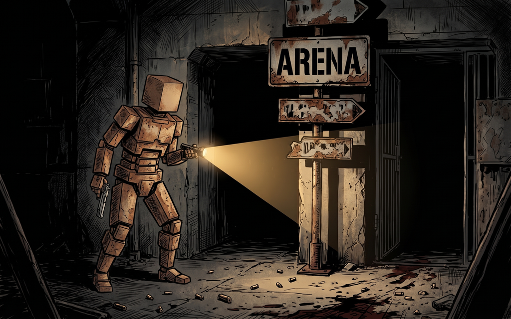
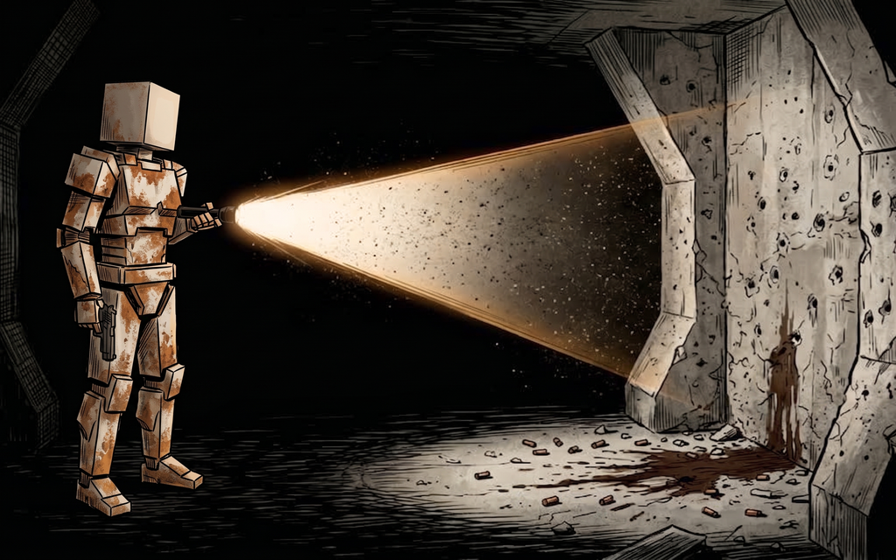
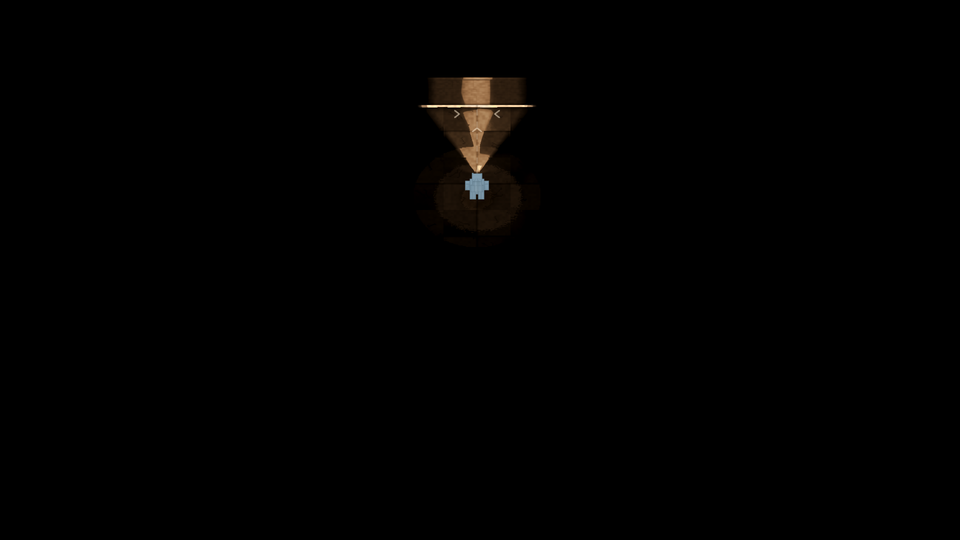
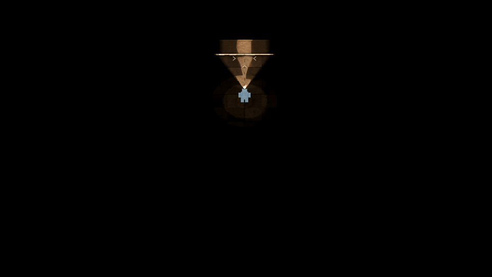
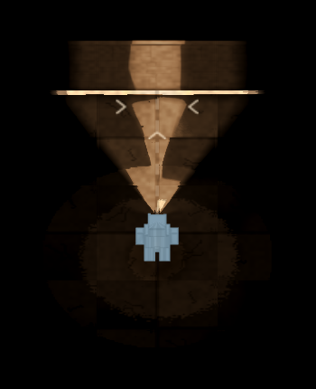

ISO13, lot E — le faisceau dans l'air
Plan torche du photographe, 1920×1080, pris deux fois à la suite : sans
puis avec --faisceau. Tout le reste est identique — même graine, même scène, même commit.
Le 2026-09-24 à 01:12, sur d8e928a.
Les deux références

L'accueil : un rayon pâle et net, sans poussière, et un point brillant à la lampe.

L'allumage : un rayon dense, criblé de grains sombres, et un cœur franc.
Les deux n'en demandent pas la même chose : « léger », dans le brief, désigne l'accueil. Et les
grains ne scintillent pas — ce sont des motes sombres silhouettées dans l'air éclairé, ce qui
est exactement ce que produit le grain du shader, qui module l'alpha vers le bas.
Le jeu, avant et après

Avant — le cône éclaire le sol, l'air est vide.

Après — --faisceau.

Loupe 1:1, avant.
Loupe 1:1, après. Le cœur à la lampe est la seule différence qu'un œil attrape.
Ce que la mesure dit, puisque l'œil ne suffit pas
| Ce qu'on mesure | Résultat | |
|---|
| Pixels changés | 32 031 sur 2 073 600, soit 1,54 % | |
| Écart médian sur ces pixels | 1 / 255 | le rayon est sous le seuil |
| Écart maximal | 226 / 255, à la lampe : (44, 29, 15) → (255, 255, 229) | le cœur éclate |
| Pixels à +8/255 ou plus | 5 322, dans la boîte du cône (x 842–1073, y 155–454) | |
| Noir absolu — pixels noirs devenus non-noirs | 161, de valeur médiane 1/255 et maximale 14/255 | |
| …dont isolés en pleine zone noire | 0 — les 161 sont au bord d'une lumière déjà visible | la règle tient |
Le noir absolu n'est pas entamé. Aucun des pixels touchés n'est isolé dans le
noir : tous bordent une lumière déjà présente. Le faisceau ne crée donc pas de lumière — il
épaissit d'un pixel ou deux la frange d'une lumière que le sol rendait déjà, de 1/255 en médiane.
C'est la garantie du fichier (une couche vaut la lightmap sous elle), vérifiée à la mesure et non
supposée.
Ce qui manque encore
Le rayon ne se lit pas. C'est le résultat principal, et il est net : à trois couches de
densité 0,08, l'écart médian est d'un niveau sur 255. Le cœur chaud à la lampe, lui, est là et
ressemble aux deux illustrations. Autrement dit le lot livre un tiers de sa commande : le cœur, oui ;
le rayon et ses grains, pas encore visibles. « Léger » a été pris trop au pied de la lettre — il reste
à trouver la densité qui se lit sans devenir le brouillard que l'accueil ne montre pas, et à la payer
en cadence contre la référence du chantier (85 de médiane, 77 au 1 % bas, au pompe sous une fusée).
Ce qui ne ressemblera pas, et n'est pas un défaut. Les deux illustrations sont vues à
hauteur d'homme : le rayon y est un coin vu de côté. Le duel est vu de dessus, et l'angle est gardé
par équité — au-dessus du cône, des couches d'air se lisent comme un voile, jamais comme un coin. La
killcam, elle, n'est pas soumise à cette contrainte.
Et le décor hors du faisceau. Dans les deux illustrations on devine les murs, les tuyaux et
les portes loin de toute lumière. Le jeu tient le noir absolu : c'est une règle, pas un manque, et
c'est elle qui plafonne la ressemblance de ces deux images.